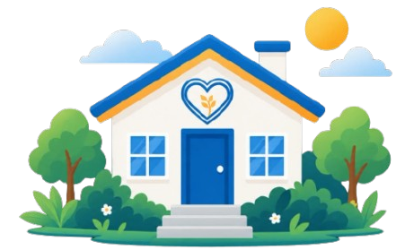
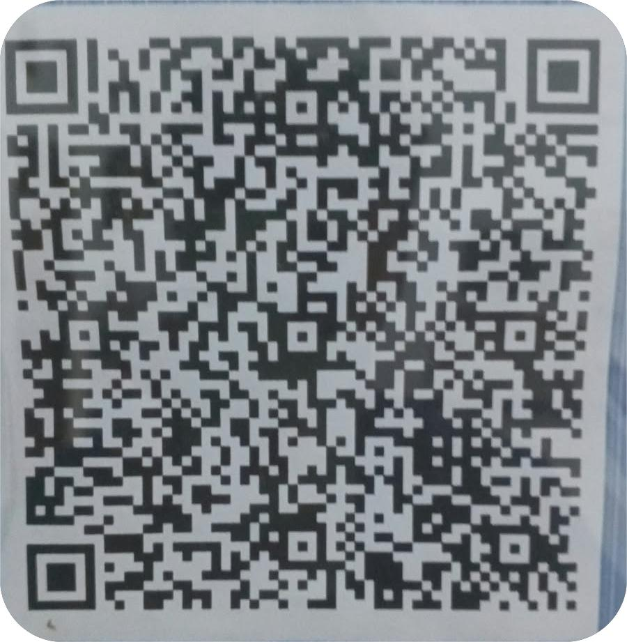

Pendidikan
Pendampingan sekolah, bimbingan belajar, dan dukungan menuju pendidikan akademi maupun profesi.
Sejak 2011, Yayasan Rumah Singgah Bina Bangsa di Kota Tegal menjadi keluarga baru bagi anak-anak yang membutuhkan, tempat mereka dikasihi, belajar, dan bertumbuh.

Yayasan Rumah Singgah Binabangsa berdiri pada tahun 2011 di Kota Tegal sebagai rumah sosial yang membuka pintu bagi anak-anak yang membutuhkan tempat tinggal, perhatian, dan pendampingan.
Di sini, setiap anak diterima apa adanya dan dibimbing untuk mengenal Tuhan, menempuh pendidikan, serta membangun karakter yang baik. Kami percaya anak-anak ini bukan sekadar penerima bantuan, melainkan calon pembawa berkat bagi sesamanya.
Terbentuk anak-anak yang takut akan Tuhan dan berhasil meraih mimpi sehingga menjadi berkat untuk semua.
Kami merawat anak-anak secara utuh: tubuh, pikiran, hati, dan masa depan mereka.
Pendampingan sekolah, bimbingan belajar, dan dukungan menuju pendidikan akademi maupun profesi.
Pemeriksaan rutin, kebersihan, serta ruang aman untuk bercerita dan dikuatkan.
Makanan sehat tiga kali sehari agar anak-anak tumbuh kuat dan bersemangat belajar.
Pelatihan sesuai minat dan bakat sebagai bekal kemandirian di masa depan.
Doa, ibadah, dan pendalaman Firman Tuhan agar iman bertumbuh bersama karakter.
Kebiasaan baik, tanggung jawab, dan kepedulian ditanamkan lewat kehidupan sehari-hari di rumah.
Potret keseharian di rumah kami.
Kutipan di bawah adalah contoh dan perlu diganti dengan cerita asli.
“Di sini saya belajar bahwa saya berharga dan punya masa depan.”
Alumni, kini bekerja
“Anak kami tumbuh lebih percaya diri dan rajin beribadah sejak dibimbing di rumah ini.”
Wali anak asuh
“Menjadi relawan di sini mengajarkan saya arti memberi dengan tulus.”
Relawan
Kami berkomitmen melaporkan setiap rupiah yang dipercayakan kepada kami.
Data contoh. Perbarui setiap periode laporan.
Setiap bentuk kebaikan, besar maupun kecil, sangat berarti bagi keluarga kami.
Bank [BCA]

Pindai dengan aplikasi bank atau dompet digital.
Kabari kami lewat WhatsApp agar donasi Anda dapat kami catat dan syukuri bersama.
Punya waktu, keahlian, atau sekadar hati yang mau hadir? Mengajar, mendampingi belajar, atau menemani kegiatan, kami menyambut Anda sebagai bagian dari keluarga.
Daftar via WhatsAppKami senang menerima kunjungan Anda. Mohon hubungi kami terlebih dahulu.